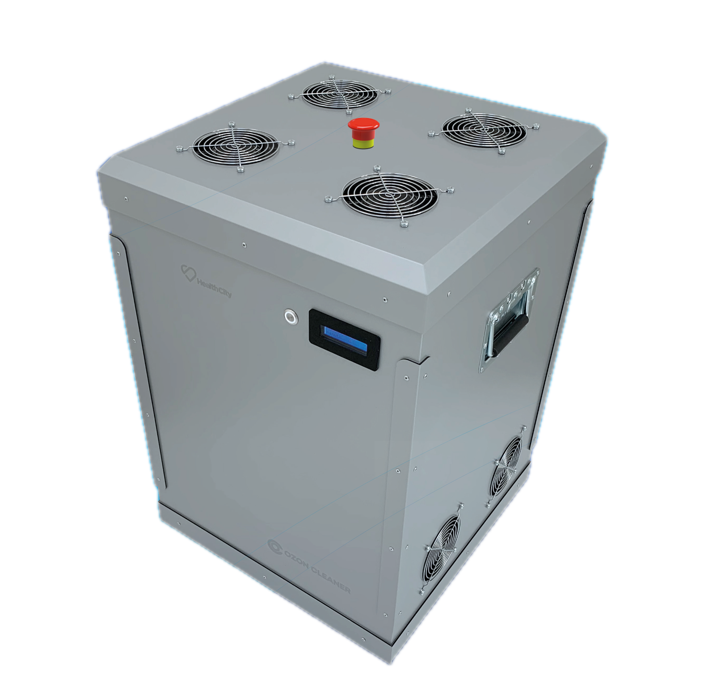

Specializovaný program ozonové sanitace pro zdravotnická zařízení. Validováno dle EN 17272:2020. Kompletní dokumentace pro hygienu a kontrolní orgány. Pravidelná sanitace s protokoly.

Zařízení registrováno u Ministerstva zdravotnictví ČR jako biocidní prostředek
Validace účinnosti dle evropské normy pro automatizovanou dezinfekci povrchů
Technologie vyvinuta ve spolupráci s Českým vysokým učením technickým
Protokoly o každé sanitaci, validační zprávy, certifikáty. Vše připraveno pro kontroly KHS a dalších orgánů.
Dezinfekce validována dle EN 17272:2020. Měřitelná a prokazatelná účinnost 99,9 % proti bakteriím, virům a plísním.
Ozon se rozloží na kyslík. Žádné chemické zbytky na površích, přístrojích ani v ovzduší. Bezpečné pro pacienty.
Sanitaci provádíme večer, v noci nebo o víkendu. Žádné narušení provozu ordinace nebo oddělení.
Praktičtí lékaři, specialisté, zubní ordinace
Pokoje, čekárny, operační sály, JIP
Pokoje, společné prostory, jídelny
Čisté prostory, přípravny, sklady
Přípravny, sklady, výdejní prostory
Masážní místnosti, bazény, sauny
Provedeme audit prostor, zmapujeme rizikové oblasti a navrhneme sanitační plán na míru.
Připravíme nabídku s frekvencí, rozsahem a cenou. Dohodneme harmonogram mimo provozní dobu.
Provedeme první sanitaci s kompletní dokumentací. Ověříme účinnost a nastavíme parametry.
Sanitujeme dle harmonogramu. Po každém zásahu obdržíte protokol. Čtvrtletně vyhodnocujeme.